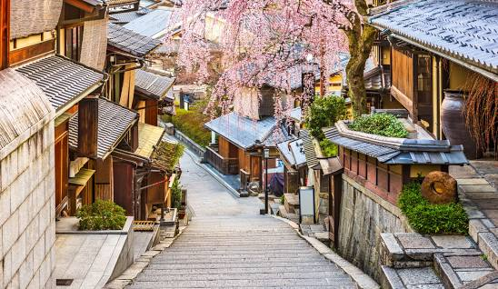

Kyoto is Japan in a nutshell. It's the cultural and historical heart of
the country. It's the best place in all Japan to experience traditional
temples, shrines, gardens, geisha, shops, restaurants and festivals, some
of which have been designated collectively as a World Heritage Site by
UNESCO. Kyoto was first settled in the 7th century and in 794, Emperor
Kammu relocated the capital of Japan from nearby Nagaoka-kyo to Kyoto,
which at the time was called “Heian-kyo” and was built as a scale replica
of the then capital of the Tang empire, Chang'an (modern day Xian).
Prominent landmarks include the Kyoto Imperial Palace, Kiyomizu-dera,
Kinkaku-ji, Ginkaku-ji, and Kyoto Tower. Seeing that Kyoto was the capital
city of Japan for over 1,000 years, it won't be a surprise that the city
is filled with history. Especially since large parts of the city are very
well preserved, Kyoto shows what Japan used to look like. This gives Kyoto
the title of the cultural capital of Japan.

A must to go to in Kyoto:
Fushimi Inari Taisha
Nijo Castle
Kinkaku-ji
Kiyomizu-dera
Rengeoin Sanjusangendo
Deers in Kyoto
There is a legend that in AD768, the first of the four gods of
Kasugataisha Shrine travelled all the way from Ibaraki Prefecture North
of Tokyo, to Mt. Mikasa in Nara, on a white deer. Thereafter, deer were
considered sacred, and killing one was punishable by death. Sika deer
flourish in Nara because they are protected, highly managed, and
generously fed by throngs of camera-wielding tourists. They're
considered sacred because of their significance in the ancient Shinto
religion.
Fushimi Inari Taisha
It is famous for its thousands of vermilion torii gates, which straddle
a network of trails behind its main buildings. The trails lead into the
wooded forest of the sacred Mount Inari, which stands at 233 meters and
belongs to the shrine grounds. The legend goes, a rice cake was shot
into the air, which turned into a swan and flew away, eventually landing
on a peak of a mountain, where rice grew (an auspicious omen in Japan).
This led to the deity Inari Okami (the god of rice) being enshrined on
the plateau and the start of Fushimi Inari Taisha